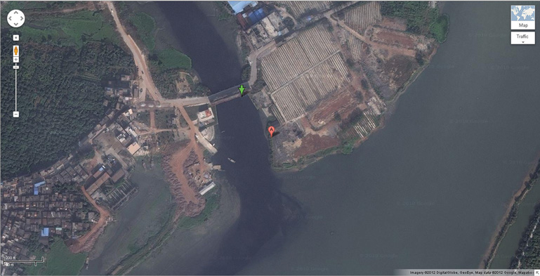

Public policy is a complex and multifaceted process. It involves the interplay of many parties. This includes many businesses, interest groups, and individuals competing and collaborating to influence policymakers to act in a particular way and on a variety of policies. These individuals and groups use numerous tactics to advance their interests. The tactics can include lobbying, advocating their positions publicly, attempting to educate supporters and opponents, and mobilizing allies on a particular issue. Perfect policies rarely emerge from the political process. Most often policy outcomes involve compromises among interested parties.
When a business considers which policy to support and advocate for, considerations include what is in their best interest—that is, which policy could help the business achieve the greatest profits. Other considerations include the policy’s political feasibility, whether a majority of others will support the policy, and also how cost effective and efficient the policy would be in achieving the desired outcome. For an example, the cost of a policy of zero carbon emissions would be prohibitive. While the benefits of zero carbon emissions might be high, it would be impossible to achieve without very high economic cost. In contrast, a phased, for example, 5 percent to 10 percent in five to ten years, reduction in carbon emissions from motor vehicles would be a more reasonable and cost effective policy. Equity is another consideration; is the policy fair, are the benefits from the policy equitably distributed, and are the costs of the policy shared fairly?
Public policies are influenced by a variety of factors. These factors include public opinion, economic conditions, new scientific discoveries, technological change, interest groupsAssociations of individuals or of organizations that form to advance a common political, economic, or social agenda., nongovernmental organizationsAn organization that is not a private company and does not have formal affiliation or representation with government. These groups often try to impact private business behavior either directly or indirectly by being influential in shaping public policy. (NGOs), business lobbyingAttempts to use information, research, or stakeholder opinion to influence governmental policy by an individual or organization., and other political activity.
As a result of the wide variety of influencing factors that tend to pull and push policy in different directions, public policy change often happens slowly. Absent a crisis, and sometimes even during a crisis, the influencing factors can tend to check and counteract each other, slowing the development and implementation of new policy and tending to lead to incremental rather than radical changes in public policy. And often, the influencing agents are more effective in blocking policy change than in having new policies adopted—as has been the case with comprehensive climate change policy at the US federal level and resistance from some large energy companies.
Public opinion and priorities have strong influence on public policy over time. Relevant to sustainable businesses is the increasing public concern about the environment, volatile energy prices, and global climate change. This is influencing public policy through electoral politics, citizen rallies, and actions that affect governmental decision makers. Also influencing public policy relevant for sustainable businesses are new scientific findings and information, such as new findings about climate change and the human and business impact on climate change (see Chapter 2 "The Science of Sustainability" for more details).
Economic conditions also significantly affect the policy environment and operating context for businesses. The Great RecessionOne of the most severe recessions or contraction of the US economy. It officially began in December 2007, lasted eighteen months ending in June 2009. Almost nine million jobs were lost in this recession. at the end of the first decade of the twenty-first century enhanced interest and support for public investments and incentives (including in energy efficiency and renewable energy) that could help to create jobs.
Technology advancements—often motivated by market and business opportunities—also affect public policy. Technology is constantly changing and this affects the business environment directly and also indirectly as public policies change with technological inventions. New, lower-cost, and easier-to-use technologies can increase public support for policies that promote renewable energy and energy efficiency and that reduce environmental damage. Examples of these include new designs and materials for packaging that reduce environmental costs, new technology that achieves mass production of full-spectrum solar cells that reduces the cost of solar energyCheap, common solar panels in production now typically only use a small percentage of the light hitting their surface, as the semiconductor materials in them only respond to certain segments of the solar spectrum. Though highly efficient solar panels that respond to the full spectrum of light have been created in the past, it has been hard to mass produce them., and programmable thermostats integrated with mobile communication (see discussion of Nest thermostats in Chapter 5 "Entrepreneurship, Innovation, and Sustainable Business") that make energy efficiency actions by households easier to do.
Interest groups include business and trade associations, professional organizations, labor unions, environmental advocacy organizations, and cause-oriented citizen groups and lobbies. Individuals and businesses also organize into associations and interest groups for other reasons than to try to influence government. This includes for promotional and educational efforts, to support specific activities that are relevant to members (such as clearing and preservation of hiking trails by the Appalachian Mountain Club), and to provide members with select benefits (such as access to cleared trails). Interests groups advocate for public policies that serve the desires of their members and further the mission of their organizations (e.g., environmental interest groups supporting legislation to improve air quality by reducing carbon emissions).
Business efforts to influence public policy and government include not only individual company efforts but also business associations. These associations act collectively to promote public policies in the best interest of business in general and also in the interest of specific industries and localities. Examples of business associations engaging in efforts to influence public policy include the US Chamber of Commerce, the National Association of Manufacturers, the state-level business and industry associations, and the local chambers of commerce. The US Chamber of Commerce is the world’s largest business organization, representing the interests of more than three million businesses of all sizes, sectors, and regions.
US Chamber of Commerce.
Source: Wikipedia, http://en.wikipedia.org/wiki/File:US_CoC_Logo.png.
Since the Toxic Substances Control Act took effect in 1976, the Environmental Protection Agency (EPA) has tested only two hundred of the eighty thousand chemicals in commerce and has regulated only five.
The American Academy of Pediatrics in 2011 called for an overhaul of the thirty-five-year-old federal law governing toxic chemicals in the environment, saying it fails to safeguard children and pregnant women.
“It is widely recognized to have been ineffective in protecting children, pregnant women and the general population from hazardous chemicals in the marketplace.”
Among the American Academy of Pediatrics’ recommendations were the following:
“Right now, a company manufactures a chemical and puts it out on the market and reaps the economic reward,” said Dr. Jerome Paulson, lead author of the policy statement. “And then the public is responsible for trying to figure out if there is any harm associated with the use of that chemical. And then it’s almost a criminal procedure, requiring proof beyond a reasonable doubt.”
Toxic waste.
Individual businesses and different business groups differ on many public policies. For example, the American Academy of Pediatrics differed from the American Chemistry Council (http://www.americanchemistry.com/Membership/MemberCompanies) on revisions to the Toxic Substances and Control Act. And in the fall of 2009, Nike, Apple, and two major utilities—California’s largest utility, Pacific Gas and Electric (PG&E), and New Mexico’s largest utility, Public Service Company of New Mexico—left the US Chamber of Commerce because of the organization’s stance against policies to address climate change.Maria Surma Manka, “Irreconcilable Differences: Utilities Leave U.S. Chamber of Commerce, Cite Climate Change,” Earth & Industry, http://bit.ly/MgYDUW.
An excerpt from PG&E CEO Peter Darbee’s resignation letter to the US Chamber of Commerce read as follows:
We find it dismaying that the Chamber neglects the indisputable fact that a decisive majority of experts have said the data on global warming are compelling and point to a threat that cannot be ignored. In our view, an intellectually honest argument over the best policy response to the challenges of climate change is one thing; disingenuous attempts to diminish or distort the reality of these challenges are quite another…I fear it has forfeited an incredible chance to play a constructive leadership role on one of the most important issues our country may ever face.
In contrast to the US Chamber of Commerce, the United States Climate Action Partnership (USCAP) was a group of businesses and leading environmental organizations that came together to call on the federal government to enact strong national legislation to require significant reductions of greenhouse gas emissions. USCAP had issued a landmark set of principles and recommendations to underscore the urgent need for a policy framework on climate change.USCAP, A Call for Action, http://us-cap.org/USCAPCallForAction.pdf.
The members of USCAP included some of the largest, best-known, and most highly respected companies in the United States including Alcoa, Chrysler, the Dow Chemical Company, Duke Energy, DuPont, Exelon Corporation, Ford Motor Company, General Electric, General Motors Company, Honeywell, Johnson & Johnson, PepsiCo, PG&E Corporation, Shell, Siemens Corporation, and Weyerhaeuser. The members believed that swift legislative action in 2009 based on the USCAP solutions-based proposal titled Call for Action would encourage innovation, enhance America’s energy security, foster economic growth, improve our balance of trade, and provide critically needed US leadership on this vital global challenge.
On the other side are those who deny that there has been significant climate change. Climate change denial is a set of organized attempts to downplay, deny, or dismiss the scientific consensus on the extent of global warming, its significance, and its connection to human behavior. Climate change denial has been mostly associated with the energy lobby and free market think tanks, often in the United States.
A nongovernmental organization (NGO) is an organization that is not a private company and does not have formal affiliation or representation with government. These are interest groups (see the preceding definition), and they often try to influence private business behavior either directly by persuasion or protest or indirectly by being influential in shaping public policy. There are currently thirty thousand to forty thousand NGOs globally, and that number keeps expanding as the groups gain support and legitimacy. This includes many environmental organizations.
There are many NGOs influencing the operating context for sustainable businesses. Table 3.1 "Examples of NGOs That Influence Sustainable Business" lists some of the NGOs active in support of sustainable business activities in the United States.
Table 3.1 Examples of NGOs That Influence Sustainable Business
| NGO | Description |
|---|---|
| Ceres | Ceres collaborates with investors and environmental and public interest groups to change the marketplace such that consumers and businesses purchase from companies that incorporate sustainability into their business practices. Ceres developed the Global Reporting Initiative to help companies report sustainability performance in the same way as financial information. Ceres’s reporting efforts are discussed in greater detail in Chapter 4 "Accountability for Sustainability". |
| The Nature Conservancy | Established in 1951, the Nature Conservancy is one of the world’s oldest and largest environmental NGOs. It focuses on using science and conservation to help businesses mitigate their environmental impact, specifically in areas of biodiversity, fresh water, forestry, and land management. |
| Sustainable Apparel Coalition | The coalition includes companies like Walmart, JCPenney, H&M, and Hanes, along with more traditionally environmentally minded manufacturers of rugged outdoor clothing like Patagonia and Timberland. The coalition is currently developing a comprehensive database of the environmental impact of every manufacturer, component, and process in apparel production, with the aim of using that information to eventually give every garment a sustainability score. |
Figure 3.2 Satellite Image of Blue Dye and Other Chemicals Washing Downriver from Textile Mills in Xintang, China—the World Capital of Blue Jeans Production
